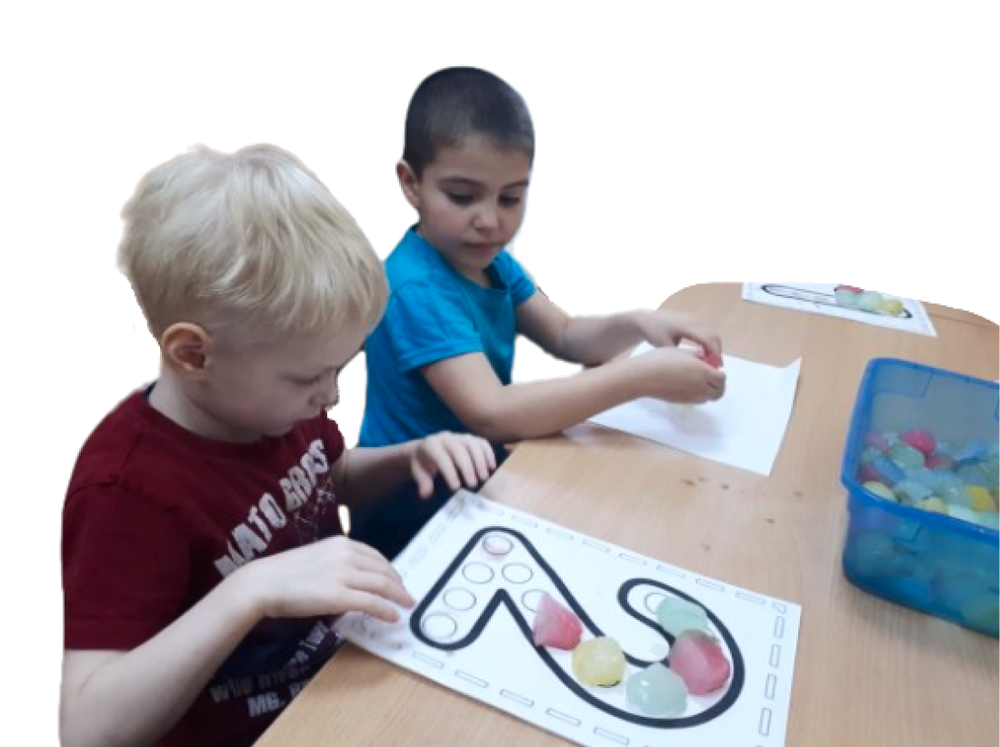

Если вы обратились к нам с целью оказания консультативной помощи, значит что-то
в речи ребенка вас смущает. Как правило родители обращаются к логопеду за
консультацией, если они не могут понять своего ребенка: выполнить его просьбу, быстро
ответить на обращения или жалобы, выраженные устной речью. В этом случае родители
обращаются к логопеду довольно рано от двух до трех лет.
Если же речь ребенка понятна близким, то за консультацией они
могут обратиться позже, когда ребёнок начинает активно
общаться с окружающими, но их речь непонятна для
окружающих взрослых. Иногда родители замечают, что речь
ребенка становится прерывистой, теряет плавность. В одних
случаях она прерывается многократным повторением первого
слога (цы-цы- цыплёнок) или гласного звука в начале слова
(а-а-аист), в других – задержкой или трудностями
в произнесении согласного звука (са-м-м-м-олет).